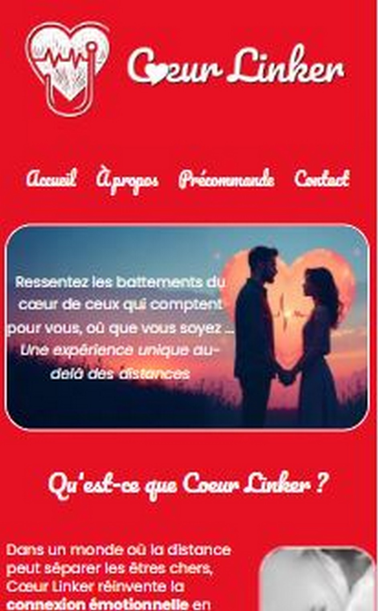

Cindy
Rousseville
Développeuse Web / Mobile
Bienvenue dans mon univers numérique
Mon univers : Présentation & technologies
Voici les technologies que j'utilise
Salut ! Je suis Cindy, passionnée par le développement web/mobile et les nouvelles technologies. Je transforme des idées complexes en expériences digitales intuitives et interactives.
Je maîtrise notamment :
JavaScript, React, Node.js, Python
je suis toujours curieuse d’explorer de nouvelles façons de créer des interfaces engageantes.
Mon objectif ? Que chaque projet ne soit pas seulement fonctionnel, mais aussi vivant et interactif, et qu’il raconte une histoire que les utilisateurs peuvent explorer.
Mes Projets
Voici quelques-uns de mes projets récents :

Contact
Vous avez un projet web ou mobile en tête ? N'hésitez pas à me contacter ! que ce soit pour collaborer, poser une question développer une idée, je serai ravie d'échanger avec vous.
Mail : contact@cindyrousseville.fr